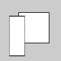

| Name | scale |
||||||||
|---|---|---|---|---|---|---|---|---|---|
| Examples |

rect(30, 20, 50, 50) scale(0.5, 1.3) rect(30, 20, 50, 50) 
rect(30, 20, 50, 50) scale(0.5) rect(30, 20, 50, 50) 
P3D <- "processing.opengl.PGraphics3D"
settings <- function() {
size(100, 100, P3D)
}
draw <- function() {
noFill()
translate(width/2 + 12, height/2)
box(20, 20, 20)
scale(2.5, 2.5, 2.5)
box(20, 20, 20)
}
| ||||||||
| Description |
Increases or decreases the size of a shape by expanding and contracting vertices. Objects always scale from their relative origin to the coordinate system. Scale values are specified as decimal percentages. For example, the function call scale(2.0) increases the dimension of a shape by 200%. Transformations apply to everything that happens after and subsequent calls to the function multiply the effect. For example, calling scale(2.0) and then scale(1.5) is the same as scale(3.0). If scale() is called within draw(), the transformation is reset when the loop begins again. Using this function with the z parameter requires using P3D as a parameter for size(), as shown in the third example above. This function can be further controlled with pushMatrix() and popMatrix(). |
||||||||
| Syntax | scale( | ||||||||
| Parameters |
| ||||||||
| Related |
pushMatrix popMatrix translate rotate rotateX rotateY rotateZ |